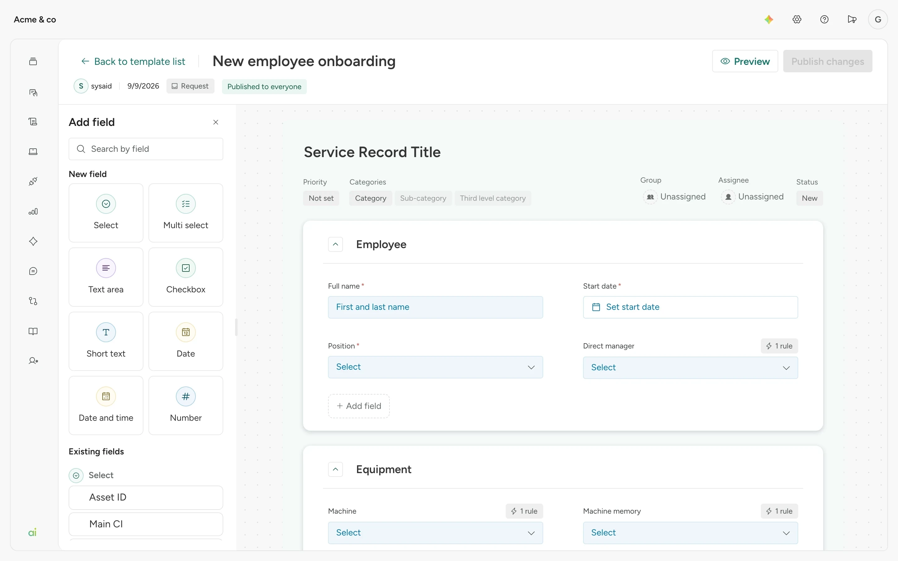

Every ticket in SysAid starts from a template: the form that decides what an incident or a request asks. To see how far the builder had fallen behind, I did the job myself. I took one realistic task, an employee onboarding request form, and built it in the live product as an IT administrator would, capturing every screen on the way.
Selected Work
 SysAid
SysAid
Rebuilt SysAid's form builder, designed inside the product's own code
IT admins use templates to define what every incident and request form asks. The old builder couldn't express conditional logic and sent admins to three places to create one field. I redesigned it end to end, working directly in a copy of the real product instead of drawing it first.
B2B SaaS
ITSM
Form builder
AI-assisted design
Design system
- My role
- Lead product designer. Owner of the Glow component library.
- Team
- PM, design technologist and one developer
- Timeline
- 6 weeks of design and planning
- Status
- Designed and prototyped in the product's code. Not released yet.
